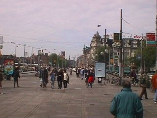
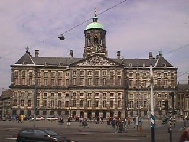

The first couple of days Joe and I were a little bit jet-lagged after being on an airplane for seven hours. We didn't do much other than look at a few things in the Amsterdam and Amstelveen areas. Amstelveen is a suburb of Amsterdam and it is where Keith lives. I haven't used my digital camera much until this point so many of the early pictures I took didn't turn out well and I had to omit them.
This is Keith standing in front of ISA. The high school he graduated from on June 5.
A view into Amsterdam from Central Station.
The Queen's Palace (The queen of the Netherlands is Queen Beatrix.)